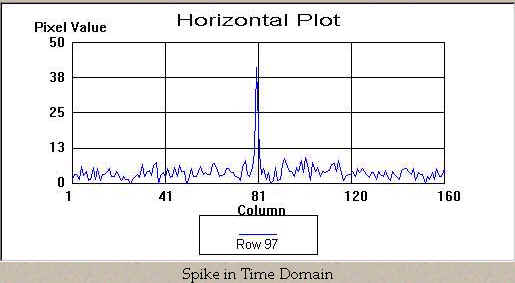
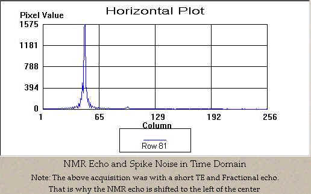
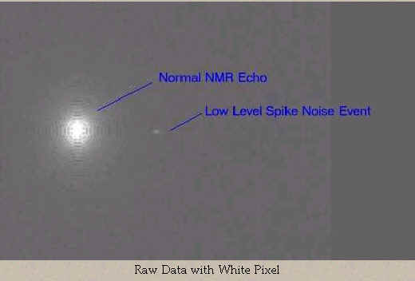
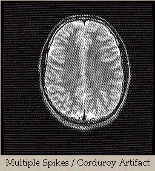
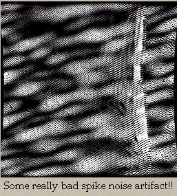

1.5T Excite White Pixel - Theory
White Pixels in Raw Data and Images
For
purposes of this discussion, let's assume that the engineers of our MRI system
have made no accommodations to eliminate or filter the spike noise from the
receive data, such as the TNF. (Click
here for TNF Theory)
Once
spike noise occurs and is received by the MRI system, how the white pixel(s)
effects the end image depends a lot on the amplitude, number of events and when
in the acquisition (k-space) the noise was received.
First,
let's get an idea of what a white pixel would look like in time domain.
That is, if we were viewing the receiver output on an oscilloscope, what
would the waveform look like? It
might look something like this plot:

When
we reconstruct the view (by doing a Fourier Transform it) the single spike looks
like this plot in the frequency domain:
We
see that the single spike has all of its energy spread out in all frequencies
across the spectrum of that view. The
baseline of the entire view has been increased slightly.
Remember? That's why we call
it "broadband" noise.
When
the 2nd FFT is applied (column FFT) the elevated view's data will appear as a
smaller spike (single row) in each projection, so it's energy will be further
spread into all of the frequencies of each column.
Based on this, we can predict that if there were no other signals
collected (ie. no echo or other spikes) then the single spike would only have
the effect of raising the intensity of the image background slightly and nothing
more.
Let's
take a look at a normal echo in both time domain and frequency domain.


The plot in frequency domain is similar to what you would see in manual prescan of a phantom That's because the AP does an FFT of the projection before it is displayed.
...and now let's see what happens to it after we apply our spike noise event. This spike is relatively small in amplitude and is at approximately sample # 98 in the below plot.

If
we were to view the entire raw data file, it might look something like this.

And
then, here's what the FFT of the above view would look like:

Notice
that there is now a sine wave (actually it's cosine, but who's counting)
superimposed on the normal frequency projection of the phantom.
Since frequency is the inverse of time, (F=1/T) the frequency of that
sine wave in the frequency domain is inversely proportional to the distance in
time domain between the echo and the spike.
The magnitude of the sine wave component is directly proportional to the
spike's amplitude.
This sine wave is what ends up as the artifact commonly called "corduroy". In an image with a single spike, the image will be superimposed with a singular pattern of waves, which resemble the wale of corduroy material. The direction of the corduroy lines is perpendicular to the vector that the spike forms in relationship to the echo center in k-space.
Here's
an example of what corduroy artifact looks like
on a patient scan:

If
there were two spikes, there would
be two corduroy patterns superimposed on each other over the desired
image. Often this will appear as a
"herringbone" tweed pattern. I
don't know why we get so hung up on fabrics when it comes to these artifact
names.

More
spikes, more corduroy patterns
will be superimposed. Sometimes
they form some complex and interesting interference patterns.

If enough spikes occur, the patterns become indistinguishable and the image just looks like it has a lot of noise, which is sort of funny because that's exactly what it has!
------------------
Jump to: